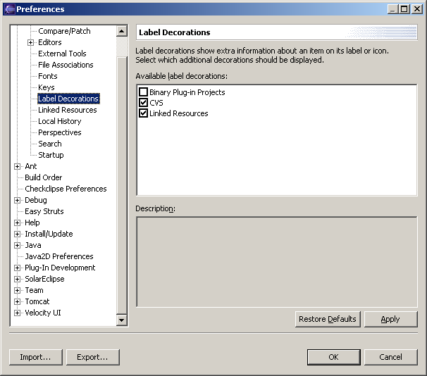
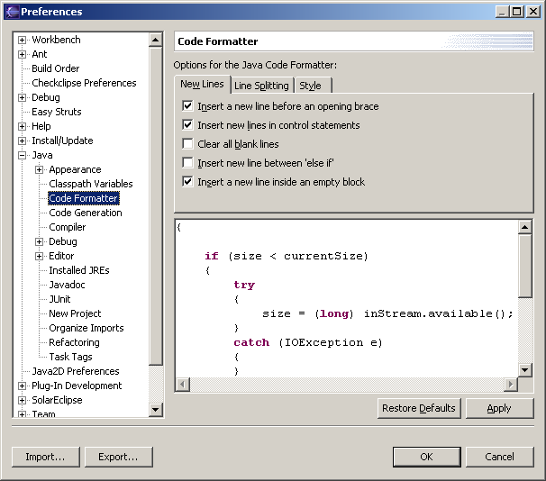
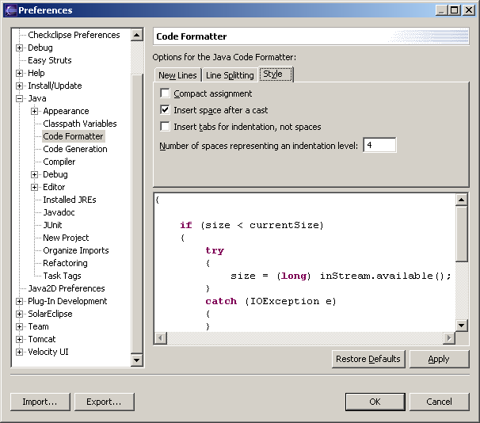
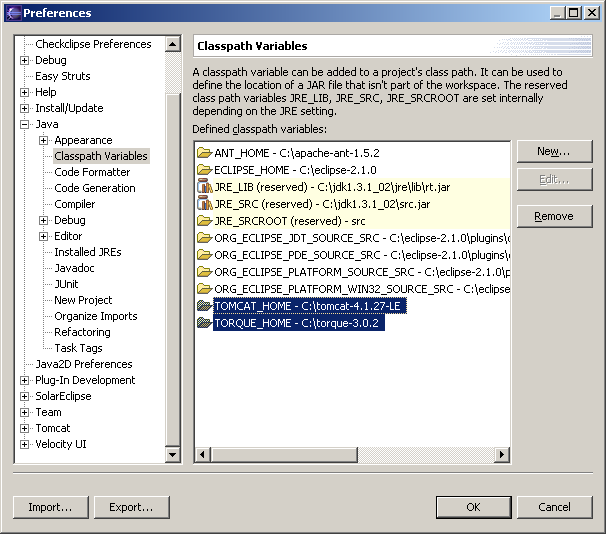
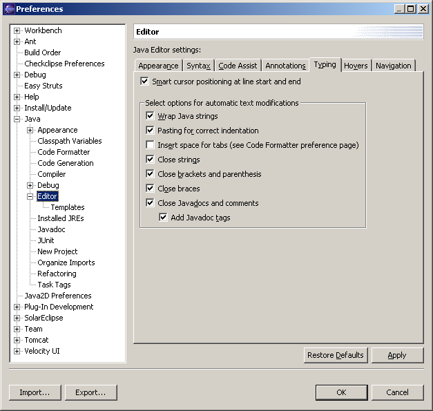

| Using an Eclipse-based IDE for Scarab Development |
Workbench | Label Decorations |
|  |
| Enable CVS decorations |
Java | Code Formatter | New Lines |
|  |
| This matches the Scarab code formatting conventions. |
Java | Code Formatter | Style |
|  |
| This matches the Scarab code formatting conventions. |
Java | Classpath Variables |
|  |
| Ensure that TOMCAT_HOME and TORQUE_HOME are set. |
Java | Editor | Typing |
|  |
| Explanation |